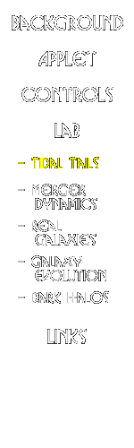

|  |
Formation of Tidal Tails
Here we will study the formation and evolution of tidal tails, the long streamers of stars which are ejected when galaxies collide. Remember that these features are caused by a combination of gravitational tidal force and the rotation of galaxies.
- Set the companion mass equal to one, so that we have an equal mass encounter, and run the default simulation. Then, keeping pericenter distance and galaxy orientation angles constant, change the companion mass and watch how the tails develop in each case. How does the development of the tidal tails change as the mass of the companion changes? Why does this happen?
- Now reset the companion mass to one, and change the pericenter distance. How do the tails change as you make the encounter more distant? Why does it change like this?
- Now reset pericenter distance to 10 kpc, and change the inclination of the galaxy disks (theta, measured with respect to the orbital plane). Remember now that the simulation is 3-dimensional, so you may need to "grab and rotate" the simulation to see the tails from different viewing angles. How does the formation of the tails depend on galaxy inclination? Why does this happen?
- Many tidal tails appear very thin and linear -- how can you get those kinds of tails?